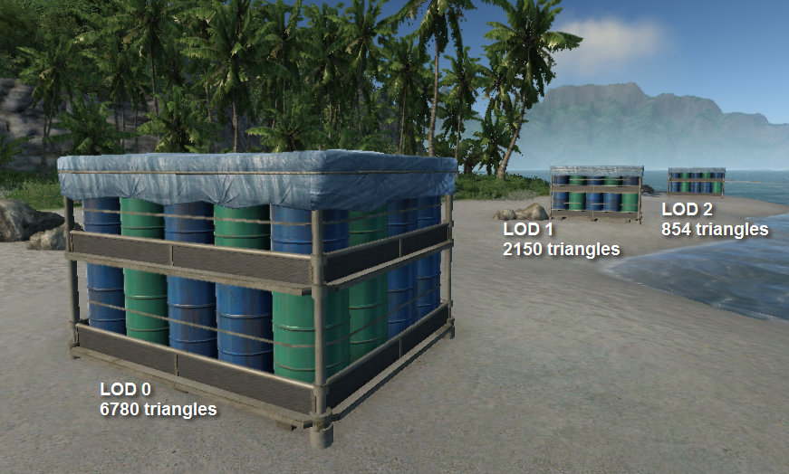
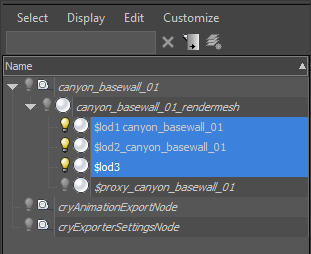
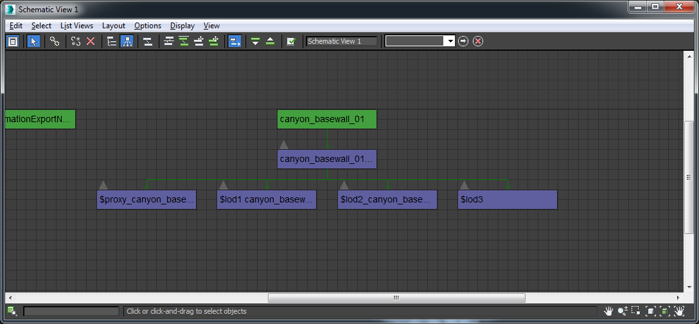
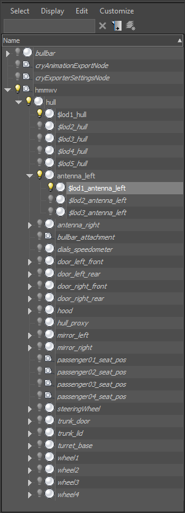
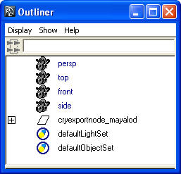
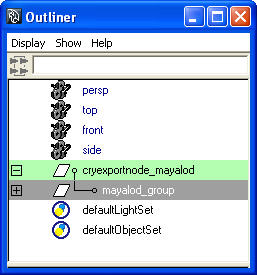
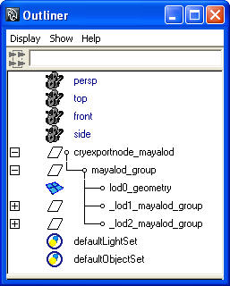

Обзор
Разделы
Объекты уровня детализации используются для улучшения производительности рендеринга объектов, расположенных далеко от плоскости изображения камеры.

Общие рекомендации
- Базовая сетка (LOD 0) не имеет префикса/суффикса. Каждый последующий LOD должен быть отдельным объектом, связанным/родителем с базовой сеткой и названным $lod1, $lod2и т. д.
- Для ясности вы также можете добавить дополнительную информацию в имя узла LOD, т.е. _lod1_sphere или _lod2_justforfun. Движок учитывает только первые 5 символов.
- Уменьшите количество идентификаторов материалов настолько, насколько это возможно, так как это уменьшит количество вызовов отрисовки, которые производит ваш LOD. В идеале последнему LOD должен быть назначен только один материал рендеринга ID. r_Stats 6 CVar позволит вам увидеть, сколько вызовов Draw производят ваши объекты.
- Каждый последующий шаг LOD должен сохранять 50 % треугольников. (т. е. 1200 -> 600 -> 300 треугольников) или уменьшить количество материалов для рендеринга. Во время экспорта будет отображаться предупреждающее сообщение, если уменьшение треугольника превышает 66%.
- В настоящее время поддерживается до 6 LOD. Это число жестко закодировано и может измениться в будущем. e_LodMin/Макс CVars позволит контролировать, какие уровни детализации используются в глобальном масштабе.
- Объекты могут иметь LOD для каждого подузла. LOD должны быть связаны/родительскими с узлами, которые они должны заменить во время рендеринга.
Специальная настройка 3DS Max
- Создавайте уменьшенные версии объекта с точно такой же позицией поворота и значениями перемещения/масштаба.
- Назовите их $lod1, $lod2, $lod3 в 3ds Max.
- Свяжите/родительский каждый LOD с родительской сеткой рендеринга.
- Экспортируйте базовую сетку с помощью инструмента экспорта CRYENGINE. Экспортер распознает связанные LOD и включит их в .cgf.
Пример для связанных LOD:

Кроме того, вы можете сделать имена LOD более конкретными, добавив пробел/подчеркивание и описательное имя после "$lod1"; т. е. «коробка $lod1», «коробка lod2».
Их конкретное наименование может помочь обнаружить проблемные активы, которые могут быть выделены Компилятор ресурсов в процессе сборки. Итак, long, поскольку узел начинается с $lod<number>, остальная часть имени не имеет значения.
В режиме схематического просмотра 3ds Max это будет выглядеть так:

LOD также можно создавать и связывать с подобъектами сложных активов, например, разрушаемых объектов, автомобилей, танков.
Движок автоматически определит правильный шаг LOD для подобъектов на основе расстояния/размера/количества треугольников объекта.
Пример LOD для подобъектов:

Экспорт
При правильной связи LOD не нужно добавлять в окно списка экспортера.
«Объединить все узлы» должно быть непроверенный в настройках экспортера.
Старая установка LOD в 3D-пакетах
Сохранено для обратной совместимости. Вы также можете создать отдельный объект .cgf с тем же именем объекта и исправлением сообщения. _lod1, _lod2и т. д.
Движок будет автоматически использовать эти внешние LOD. Но этот метод не рекомендуется и может быть удален в будущих выпусках.
Примеры:
- ball.cgf
- ball_LOD1.cgf
- ball_LOD2.cgf
Maya Специальная настройка
1. Создайте группу под названием «cryexportnode_@», заменив «@» именем файла для экспорта.

2. Сгруппируйте сетку с самой высокой детализацией (lod0) в новую группу под названием «#_group», заменив «#» на имя модели, которую вы экспортируете.
3. Сгруппируйте «#_group» для LOD0 под «cryexportnode».

4. Для каждого дополнительного уровня LOD создайте группу, используя соглашение об именовании, принятое в шаге 5.
5. Убедитесь, что уровни LOD используют следующее соглашение об именах:номер #@_group', заменив '@' именем сетки по вашему выбору, замените # на lod ID. Убедитесь, что то же самое для всех уровней LOD, например _lod1_mayalod_group, _lod2_mayalod_group.
6. Сгруппируйте геометрию для каждого LOD под узлами, которые мы создали на шаге 4.

7. Выберите группу «cryexportnode».
8. Нажмите кнопку экспорта на панели инструментов «Crytek», чтобы открыть диалоговое окно «Экспорт в Crytek».
9. Нажмите кнопку «Добавить атрибуты».
10. Убедитесь, что установлен флажок «Не объединять узлы».
11. Нажмите кнопку «Экспорт» в диалоговом окне «Экспорт в Crytek».

Пример сцены Maya для настройки геометрии LODing можно скачать. здесь.
Настройка в Sandbox
Никакой специальной настройки не требуется. Движок автоматически обнаружит LOD и будет использовать их, если они доступны.
Отладка LOD
Существуют различные консольные команды, которые помогают отлаживать LOD в Sandbox или в игровом режиме.
e_Lods
Load and use LOD models for static geometry
e_LodMin
Min LOD for objects
e_LodMax
Max LOD for objects
e_DebugDraw
Draw helpers with information for each object (same number negative hides the text)
1: Name of the used cgf, polycount, used LOD
2: Color coded polygon count
3: Show color coded LODs count, flashing color indicates no Lod
4: Display object texture memory usage
5: Display color coded number of render materials
6: Display ambient color
7: Display tri count, number of render materials, texture memory
8: RenderWorld statistics (with view cones)
9: RenderWorld statistics (with view cones without lights)
10: Render geometry with simple lines and triangles
11: Render occlusion geometry additionally
12: Render occlusion geometry without render geometry
13: Display occlusion amount (used during AO computations). Warning: can take a long time to calculate, depending on level size!
15: Display helpers
16: Display debug gun
17: Streaming info (buffer sizes)
18: Streaming info (required streaming speed)
19: Physics proxy triangle count
20: Display object instant texture memory usage
21: Display animated object distance to camera
22: Display object's current LOD vertex count